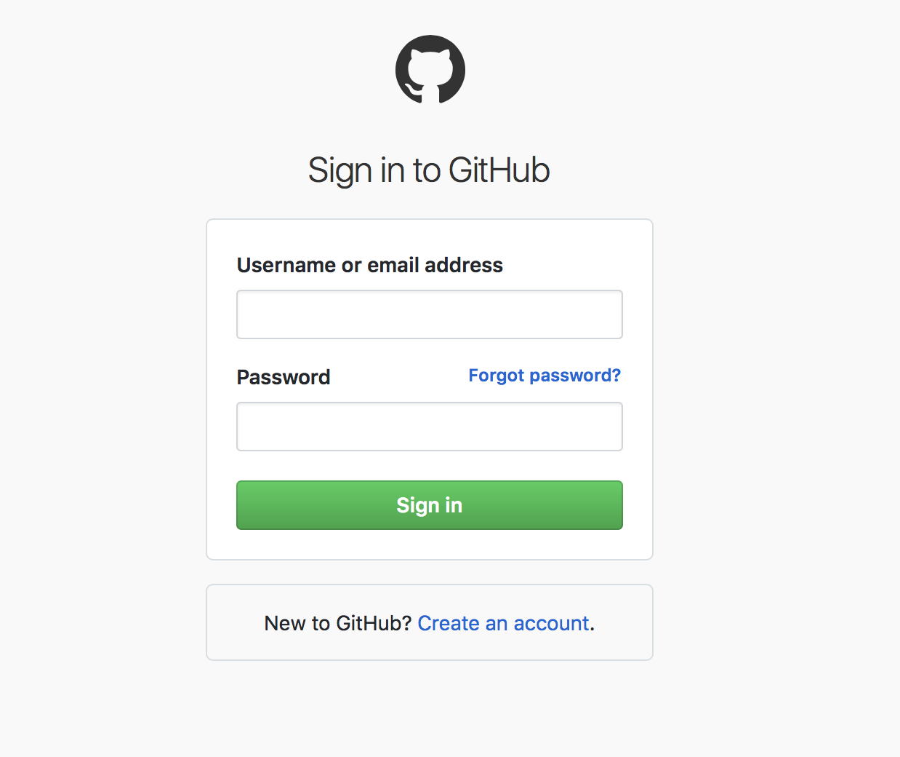
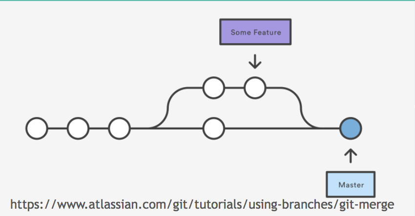

GitHub: What? Why? How?
Version control
Management of changes, called revisions to any types of information
- Simple file versioning add v1.0, v1.1, … to filenames
- Simple tools: Google Drive, Dropbox...
- Advanced tools: subversion and git
Revision:Change associated with a timestamp and the person making the change
Benefits of version control
- Go back to previous versions
- Store history of changes
- Collaborate with others
Git: a distributed version control system
Git allows us to collaboratively work on the same documents at the same time, and without stepping on each other's toes

 Image attributions: https://xkcd.com
1296 & 1597
Image attributions: https://xkcd.com
1296 & 1597
Interacting with Git
- Online
- Using a GUI (graphical user interface) application
- Via the command line
- Via IDEs: Rstudio, PyCharm
Hands on!
My first repo
Steps 1- 3Git /GitHub terms
- Repository: a project where all your files are, online or on your computer
- Commit: saving a version of file(s)
- Issues: to-do list of tasks, bugs and things you wish to accomplish
- Branches: copies of the project 
More terms
- Pull request: request to add your changes from a branch back into master
- Merge: act of incorporating new changes (commits) from one branch to another